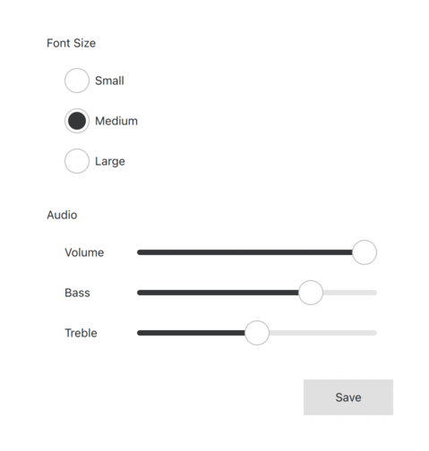

Basic Style
The Basic style is a basic all-round style.
The Basic style is a simple and light-weight style that offers the maximum performance for Qt Quick Controls. It is built with a minimal amount of Qt Quick primitives, and keeps animations and transitions to the minimum.

The style is selected by default when running Qt Quick Controls applications. It is built into the module's resources, so by default it is shipped with any application that depends on the Qt Quick Controls module
Note: The Basic style is used as a fallback for other styles. If a style does not implement a certain control, the Basic style implementation of that control is selected.
See also Material Style, Universal Style